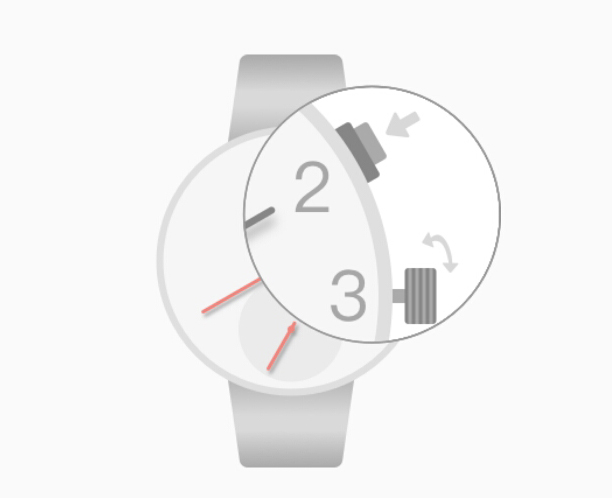

Ver status: o curso clicando 4:00 títulos pode verificar o status da conexão Bluetooth, 12:00 flashes de luz indica o dobro que o relógio não está conectado ao telefone; 12: cerca de 00 luzes piscam durante dois segundos Descrição relógio com o telefone estiver conectado, se não luzes brilhantes não piscam indica que o Bluetooth não está aberto
Bluetooth está ligado: o nó está no modo de relógio ou no estado fechado, pressione as teclas 4:00 2 segundo Abertas。
Desligar: sob o status relógio e telefone de ligação, quando uma chamada alertas, clique 4:00 ligações podem desligar o telefone。
Câmera de controle remoto: um estado de conexão sob o telefone do relógio, pressione as teclas 4:00 de 2 segundos para entrar no modo fotografar remoto, a câmera e, em seguida, abrir o telefone, pressione a tecla ou bits 04:00 câmara controlável Fanwan。

Sincronizar automaticamente o tempo de telefone para assistir, o ponteiro do relógio é encontrada imprecisa, a coroa pode ser puxada para fora, transformando a hora de ajuste da coroa e dos minutos; mostrador pequeno, como um relógio, a coroa é puxada 2:00 teclas de discagem para controlar pequena ponteiro de rotação, as horas, os minutos e as pequenas ponteiros apontar para depois das 12:00, que empurra para trás a coroa, o ponteiro travar automaticamente o tempo correcto。
Perguntas Mais Frequentes：
●Após o tempo de telefone para alterar o relógio não muda automaticamente o tempo. O aplicativo de telefone para o primeiro plano, espere cerca de 10 segundos。
●Telefone da Apple está ligado, o controle remoto não avisar ou não para tirar fotos. Ou telefone da Apple não está emparelhado com Bluetooth. Abra o seu modo de voo de telefone celular, cerca de 10 segundos e em seguida, desligue. Reconnect ainda existe como relógios, assistir 4:00 pressione as teclas pelo menos 7 segundos reiniciar relógios。
●Bluetooth pesquisa conexão novamente。
●Você não pode tirar fotos no controle remoto e assistir telefones Android emparelhados. Digite Bluetooth detalhes do dispositivo, verifique se o dispositivo é um dispositivo de entrada, como verificado, abra a câmera do telefone, o botão da câmera para mudar o telefone ou toque as teclas de volume para controlar a câmera. (Parte de modelos Android não suportam dispositivos de entrada.)
●Telefones Android ainda nem sequer assistir a um lembrete. Verifique o aplicativo lembrete telefonema, um interruptor lembrando mensagem é ligada, adicione um telefone no aplicativo de telefone vai confiar lista (parte do assistente de segurança móvel irá proteger); verifique a barra de notificação de telefone para lembrar o interruptor está ligado ao telefone app。
●Outras anomalias, tais como Bluetooth continuamente aceso lâmpada ou flicker contínua. Imprensa relógio 4:00 7 segundos ou mais teclas reiniciar relógios; assistir operação de abertura da tampa é pressionar inválido o botão de reset。